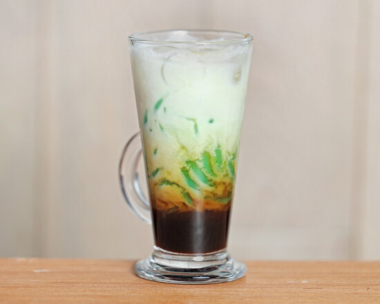

Authentic flavour that brings guests back to Indonesia.Recurring review theme
Family-run
since 1986
since 1986

04 · The people behind the table
Small restaurant. Big welcome.
Bali Bali has served Indonesian food in London’s West End since 1986. The experience is personal and relaxed: ask questions, share dishes and let the team help you find your favourites.